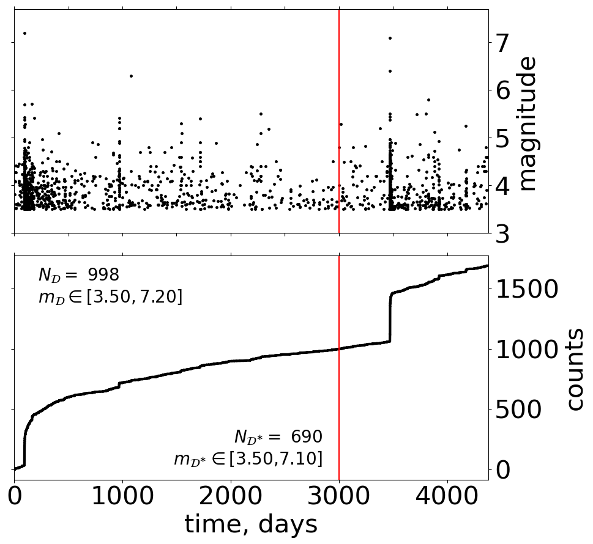
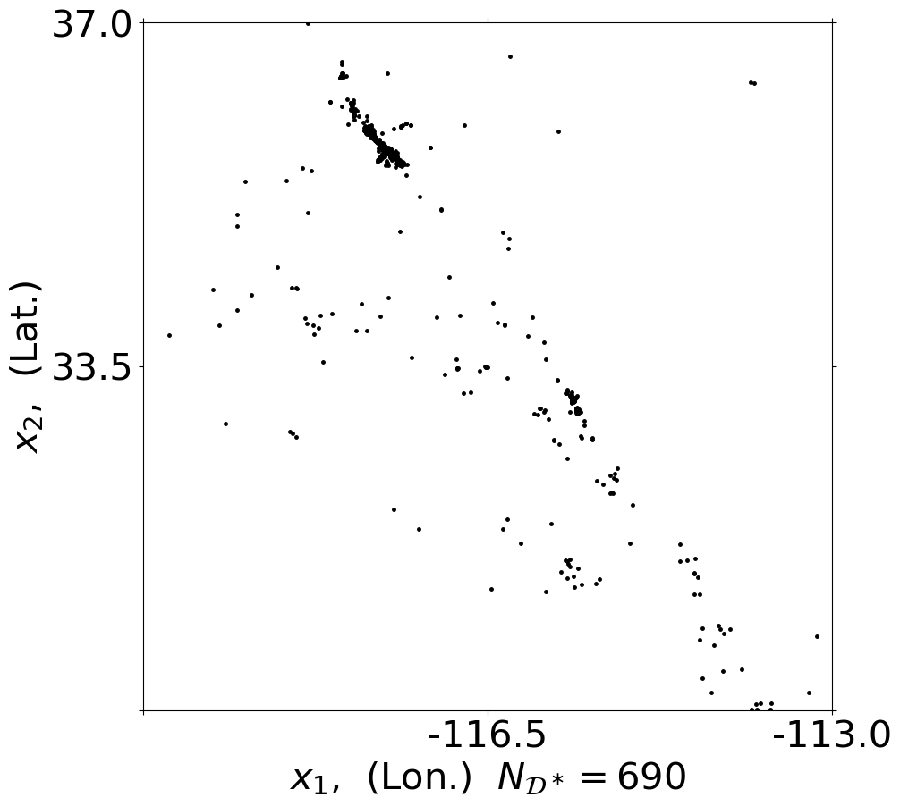
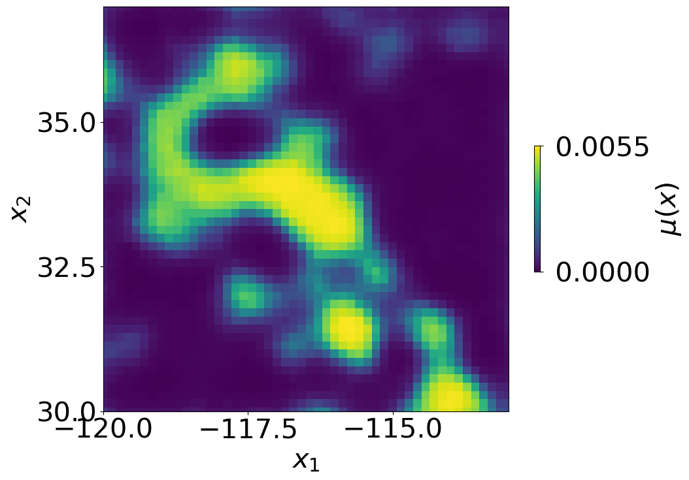

Results#
Bayesian inference via sampling and MLE#
Generate some summary and comparison
[1]:
import gpetas
import numpy as np
import datetime
time_format = "%Y-%m-%d %H:%M:%S.%f"
# auto reload using developer version
%load_ext autoreload
%autoreload 2
Load inference results: save_GS_obj and mle_obj#
[2]:
case_name = 'Rxxx'
print(case_name)
output_dir = './output/inference_results'
# sampler
fname = output_dir+'/GS_save_data_%s.bin'%case_name
save_GS_obj = np.load(fname,allow_pickle=True)
# mle default
fname = output_dir+'/mle_default_hmin_%s.all'%case_name
mle_obj = np.load(fname,allow_pickle=True)
Rxxx
Plot summary#
You can directly plot a summary of the Bayesian inference or you can first do MLE and plot subsequently a summary with comparison
[3]:
gpetas.summary.summary_gpetas(save_obj_GS=save_GS_obj,mle_obj=mle_obj)
from orig. data_obj |T_training| [3000.] |X| 49.0
testing periods
[[ 0. 3000.]
[3000. 4383.]] days.
Number of employed posterior samples: 90
Current T_star_testing = [ 0. 3000.]
---------------------------------------------------------------------------
KeyboardInterrupt Traceback (most recent call last)
Cell In[3], line 1
----> 1 gpetas.summary.summary_gpetas(save_obj_GS=save_GS_obj,mle_obj=mle_obj)
File /Volumes/data_SFB1294/pack/gpetas_github/gpetas/utils/summary.py:206, in summary_gpetas.__init__(self, save_obj_GS, gm_obj, mle_obj, mle_obj_silverman, fout_dir, case_name, ltest_plot)
201 plt.close(h1)
203 # (9) gpetas_intensity(X_grid,t)
204
205 # (10) ltest plot
--> 206 h1, h2 = gpetas.plotting.plot_l_ltest(save_obj_GS=save_obj_GS,mle_obj=mle_obj,mle_obj_silverman=mle_obj_silverman)
207 h1.savefig(out_dir + '/%s_F10_l_ltest01.pdf' % data_obj.case_name, bbox_inches='tight')
208 h2.savefig(out_dir + '/%s_F10b_l_ltest02.pdf' % data_obj.case_name, bbox_inches='tight')
File /Volumes/data_SFB1294/pack/gpetas_github/gpetas/utils/plotting.py:80, in plot_l_ltest(save_obj_GS, mle_obj, mle_obj_silverman, t1, t2, idx_samples)
78 if idx_samples is None:
79 idx_samples = np.arange(0, len(save_obj_GS['lambda_bar']))
---> 80 l_values = gpetas.loglike.test_likelihood_GS(save_obj_GS=save_obj_GS,
81 testing_periods=testing_periods,
82 data_obj=save_obj_GS['data_obj'],
83 idx_samples=idx_samples,
84 method_posterior_GP=method_posterior_GP,
85 method_integral=None)
86 print('gpetas:', l_values.l_test_GPetas_log_E_L)
88 # mle
File /Volumes/data_SFB1294/pack/gpetas_github/gpetas/core/loglike.py:253, in test_likelihood_GS.__init__(self, save_obj_GS, testing_periods, data_obj, idx_samples, method_posterior_GP, method_integral)
250 print('Current T_star_testing =', T_borders_testing)
252 # gpetas: log_E_L_gpetas
--> 253 lnl_samples_i = gpetas.loglike.lnl_sample(save_obj_GS=save_obj_GS,
254 data_obj=data_obj,
255 idx_samples=idx_samples,
256 T_borders_eval_l=T_borders_testing,
257 method_posterior_GP=method_posterior_GP,
258 method_integral=method_integral)
259 lnl_samples_mat[i, :] = np.copy(lnl_samples_i.lnl_all)
260 l_test_GPetas_log_E_L[i] = logsumexp(lnl_samples_i.lnl_all) - np.log(len(lnl_samples_i.lnl_all))
File /Volumes/data_SFB1294/pack/gpetas_github/gpetas/core/loglike.py:173, in lnl_sample.__init__(self, save_obj_GS, data_obj, idx_samples, T_borders_eval_l, method_posterior_GP, method_integral)
171 k = idx_samples[i]
172 # mu_xi_at_all_data (=data_obj.data_all.positions)
--> 173 mu_xi_at_all_data = mu_xprime_gpetas(xprime=position_testing,
174 mu_grid=save_obj_GS['mu_grid'][k], X_grid=self.X_grid,
175 X_borders=self.X_borders,
176 method=method_posterior_GP,
177 lambda_bar=save_obj_GS['lambda_bar'][k],
178 cov_params=[save_obj_GS['cov_params_theta'][k].item(), np.array(
179 [save_obj_GS['cov_params_nu1'][k].item(),
180 save_obj_GS['cov_params_nu2'][k].item()])])
182 # integral mu_x
183 if method_integral == 'Riemann_sum':
File /Volumes/data_SFB1294/pack/gpetas_github/gpetas/utils/some_fun.py:577, in mu_xprime_gpetas(xprime, mu_grid, X_grid, X_borders, method, lambda_bar, cov_params)
575 if method == 'sparse':
576 f = inv_sigmoid(mu_grid / lambda_bar)
--> 577 fprime = sample_from_cond_gp(xprime, f, X_grid, cov_params=cov_params)
578 mu_xprime = lambda_bar * sigmoid(fprime)
580 elif method == 'sparse_mean':
File /Volumes/data_SFB1294/pack/gpetas_github/gpetas/utils/some_fun.py:630, in sample_from_cond_gp(xprime, f, x, cov_params, noise)
628 k = cov_func(x, xprime, cov_params=cov_params) # K_ffprime
629 K_ff = cov_func(x, x, cov_params=cov_params)
--> 630 K_ff_inv = inverse(K_ff)
631 mean = k.T.dot(K_ff_inv.dot(f))
632 kprimeprime = cov_func(xprime, xprime, cov_params=cov_params)
File /Volumes/data_SFB1294/pack/gpetas_github/gpetas/utils/some_fun.py:653, in inverse(K, noise)
651 L = np.linalg.cholesky(K)
652 L_inv = solve_triangular(L, np.eye(L.shape[0]), lower=True, check_finite=False)
--> 653 K_inv = L_inv.T.dot(L_inv)
654 return K_inv
KeyboardInterrupt:




